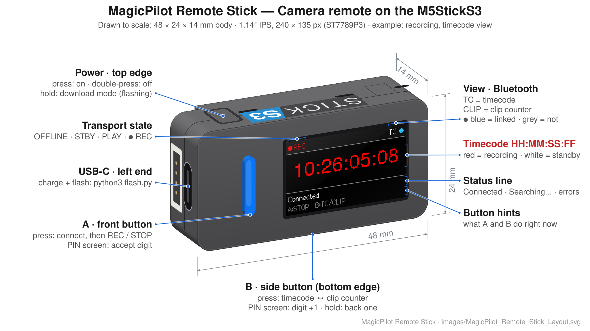
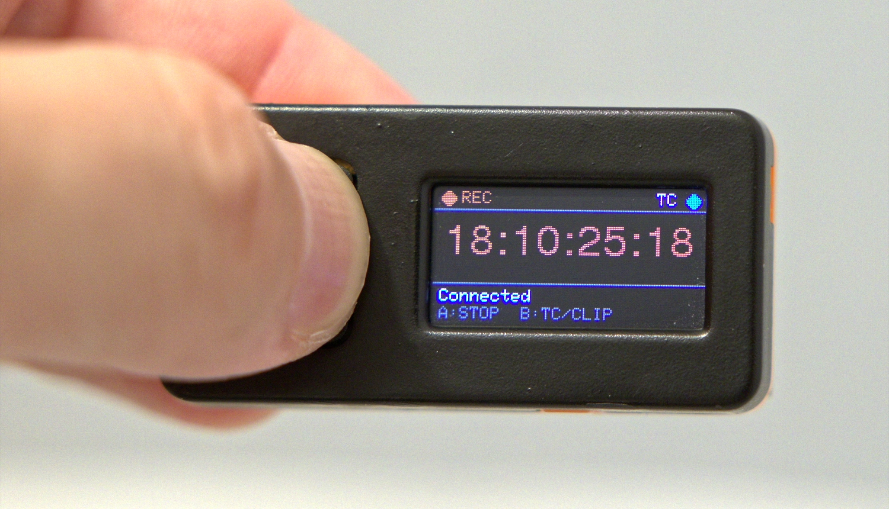

Features
⏱️ Live timecode
The camera's timecode as HH:MM:SS:FF, large enough to read at a glance.
🔴 One-press recording
Press A to start or stop recording. REC and the timecode turn red while the camera records.
🎞️ Clip counter
Press B to switch to the camera's clip counter, which keeps its last value after you stop.
🔗 Direct Bluetooth LE
Pairs with the camera using its 6-digit PIN. No phone, tablet, Wi-Fi or app.
📟 Two Sticks
Runs on the original M5StickC and the M5Stack StickS3; the layout adapts to the screen.
⚡ One-command flashing
flash.py detects ESP32 or ESP32-S3 and uploads the matching build.
On the original M5StickC

Supported hardware
| Device | Chip | Display (landscape) | Status |
|---|---|---|---|
| Original M5StickC | ESP32 | 160×80 | Firmware build passes |
| M5Stack StickS3 | ESP32-S3 | 240×135 | Build, chip detection and upload verified on hardware; camera functions not yet verified |
You also need a Blackmagic Pocket Cinema Camera 6K (or another camera that uses Blackmagic's Bluetooth camera control, untested) and a USB data cable for flashing. Other Stick variants are not currently supported.
Pairing
- Put the camera in Bluetooth pairing mode.
- Press A on the stick.
- Enter the 6-digit PIN shown on the camera.
Build and flash
Install Python 3 and PlatformIO (Core or the VS Code extension), connect one supported Stick with a USB data cable, close any serial monitors, and run from the project folder:
macOS and Linux:
python3 flash.pyWindows:
py flash.pyThe helper reads the chip type, then builds and uploads only the matching firmware. On a StickS3 with factory firmware, hold the side reset button until the internal green LED flashes, then run the command again. After the upload, press A to connect to the camera.
Port selection, troubleshooting and Arduino IDE settings are in the full build & flash guide.
Frequently asked questions
How can I see my Blackmagic camera's timecode on a small remote?
Flash MagicPilot Remote Stick onto an M5StickC or M5Stack StickS3 and pair it with the camera over Bluetooth LE. It shows the camera's live timecode (HH:MM:SS:FF), and the front button starts and stops recording. You don't need a phone or an app.
Which Blackmagic cameras are supported?
The project targets the Blackmagic Pocket Cinema Camera 6K (BMPCC6K). Other cameras that use the Blackmagic Camera Control Bluetooth protocol may work but haven't been tested.
Which M5Stack devices does it run on?
The original M5StickC (ESP32, 160×80 screen) and the M5Stack StickS3 (ESP32-S3, 240×135 screen). Flashing is verified on StickS3 hardware; camera pairing, timecode display and recording control on StickS3 still need hardware verification.
How do I pair the stick with the camera?
Put the camera in Bluetooth pairing mode, press A on the stick, then enter the 6-digit PIN shown on the camera. B changes the current digit (hold B to go back one), and A accepts it.
Is MagicPilot Remote Stick free?
Yes. MagicPilot Remote Stick is open-source firmware licensed under the LGPL-3.0.